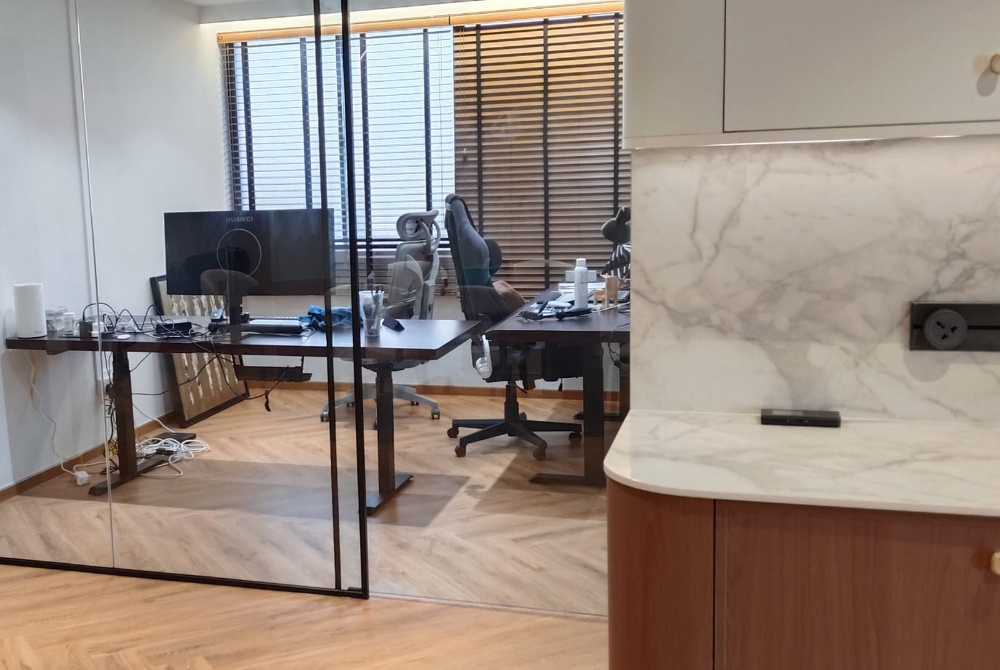

Built-in wardrobe & carpentry cost in Singapore

Carpentry is the line that quietly decides whether a renovation comes in on budget. It is quoted in a unit most owners have never used before, per foot run, and that unit hides height, depth, material and everything inside the box. As a 2026 guide, budget roughly S$180–320 per foot run for a swing-door built-in wardrobe and S$220–400 for sliding doors, which puts a typical 8-foot bedroom wardrobe at S$1,400–3,200. Below: what the rate does and doesn't include, real figures from our own jobs, and where building in is worth it.
What "per foot run" actually means
A foot run is one linear foot of the unit measured along the wall. An 8-foot wardrobe is 8 foot runs. Simple enough, and that is the problem, because height, depth, material and internal fit-out are all invisible in that number.
Two quotes at "S$200 per foot run" can be:
- a 7-foot-high MDF carcass with two shelves and a rail, or
- a full-height plywood unit running to the ceiling with drawers, soft-close runners and a top box.
Same rate, different job, roughly double the value. So before comparing any two carpentry quotes, pin down four things: carcass material, finished height, depth, and what internal fit-out is included versus charged as an extra. Everything else on this page follows from those four.
Carpentry cost by item (2026)
| Item | Indicative cost (SGD) | Notes |
|---|---|---|
| Built-in wardrobe, swing doors | $180 – $320 per ft run | Plywood carcass, laminate finish |
| Built-in wardrobe, sliding doors | $220 – $400 per ft run | Track system adds cost; saves swing space |
| Kitchen top cabinets | $130 – $220 per ft run | Lighter carcass, no worktop |
| Kitchen bottom cabinets | $180 – $300 per ft run | Excludes worktop; specify moisture-resistant ply |
| Full-height storage / feature unit | $200 – $350 per ft run | Floor to ceiling |
| TV feature wall carpentry | $1,200 – $3,500 | Design-dependent; a real RK E&C job below |
| Study desk / work-from-home built-in | $600 – $1,800 | Desk, shelving, cable management |
| Vanity cabinet | $400 – $1,000 | Built around plumbing, moisture-resistant ply only |
| Drawers (added to a unit) | $80 – $150 each | Usually an extra, not included in the rate |
| Whole 4-room flat, full carpentry | $8,000 – $18,000 | Wardrobes, kitchen, feature walls together |
Two real anchors from our own jobs rather than ranges. On the whole-flat renovation in Bukit Panjang that we itemise in the S$38,330 breakdown, the TV wall and door top cover came to S$480 and the ceiling and cotton pelmet work to S$4,450. On a separate resale flat job, two ready-made cabinets supplied and installed came to S$300, which is the whole argument for the next section.
Built-in or loose? The honest answer
Something worth noticing about that S$38,330 renovation: there is no built-in wardrobe line on it at all. The owner spent on flooring, electrical, waterproofing and a sliding door, and bought loose furniture. That is a legitimate and increasingly common choice, not a compromise.
| Built-in carpentry | Loose furniture | |
|---|---|---|
| Cost for 8 ft of wardrobe | $1,400 – $3,200 | $300 – $900 |
| Fit | Exact, uses full height and awkward corners | Standard sizes; gaps at top and sides |
| Storage per square foot | Higher | Lower |
| Lead time | 2 – 4 weeks fabrication | Days |
| Moves with you | No | Yes |
| Changeable later | Not really | Easily |
The rule we give clients: build in where the space is genuinely irregular or where you need full ceiling height; buy loose where a standard unit fits the gap. Building a wardrobe into a space a standard wardrobe would have filled is paying three times the price for a flush edge. Conversely, a sloping bulkhead, a 2.4-metre ceiling you want to use to the top, or a nook beside a structural column is exactly what carpentry is for.
If you are furnishing with flat-pack instead, our guides to furniture assembly costs and Taobao furniture assembly cover that route, including anchoring tall units to the wall safely.
Materials: the choice that decides longevity
In Singapore's humidity this matters more than the finish you can see.
- Moisture-resistant plywood. The default, and worth insisting on. Holds screws, tolerates a splash, survives being unscrewed and refixed. Specify it explicitly for anything in a kitchen or bathroom.
- Blockboard. Reasonable for large flat panels and wardrobe backs; lighter on cost, less screw-holding strength.
- MDF. The smoothest surface for a painted finish, and the worst possible choice anywhere near water. Once moisture reaches the core it swells and never recovers. Not for kitchen bottom carcasses or vanities.
On surfaces, laminate is the practical default: durable, huge range, easy to clean. Spray paint (2K) gives a seamless high-end look at a real premium, and it chips. Veneer gives genuine timber grain and needs more care. Most flats are laminate throughout with one spray-painted feature, which is a sensible way to spend the money.
The line to insist on in the quote: "carcass: moisture-resistant plywood". If a quote does not name the carcass material, that is the first question to ask, not the price.
When carpentry happens, and why it's the deadline
Carpentry is measured against finished dimensions, not drawings. Walls have to be plastered, floors laid and ceilings closed before the final measure, because a 10 mm skim coat and a 15 mm flooring build-up both change the opening the wardrobe has to fit.
So the sequence is:
- Hacking, masonry, electrical first fix, plumbing.
- Plastering, ceilings, tiling, flooring.
- Final carpentry site measure. Against finished surfaces.
- Two to four weeks fabrication in the workshop.
- Painting.
- Carpentry installation, one to three days on site.
- Electrical second fix, fixtures, final clean.
Step 3 is the one that decides your handover date. Fabrication is two to four weeks whatever else is happening, so a measure booked late pushes everything after it. If a renovation is running behind, carpentry is almost always the reason. Where wardrobes back onto a new partition, our drywall contractor guide covers getting backing into the wall before it is boarded.
Where the money goes wrong
- Comparing rates instead of specifications. The per-foot-run number is meaningless without height, depth and material.
- Assuming internals are included. Drawers, pull-outs, soft-close runners and extra shelves are usually extras. Get them itemised at quote stage, when they are cheap to add.
- MDF near water. The most expensive S$300 saving available.
- Building in what should be loose. Standard gap, standard wardrobe.
- Measuring before finishes. A wardrobe built to the pre-plaster dimension does not fit the post-plaster room.
- Forgetting the door swing. Swing doors need clearance the room may not have. Sliding costs more per foot run and can still be the cheaper answer once you count the floor space it frees.
Frequently asked questions
How much does a built-in wardrobe cost in Singapore?
S$180–320 per foot run for swing doors, S$220–400 for sliding, in plywood with laminate. A typical 8-foot wardrobe lands at S$1,400–3,200 depending on height, internals and door type.
What does per foot run mean?
One linear foot of the unit along the wall, regardless of height or depth. Which is why the rate alone tells you very little. Always confirm height, depth, material and what internal fit-out is included.
Which material is best?
Moisture-resistant plywood, especially near water. Blockboard is acceptable for large flat panels. Avoid MDF for kitchen bottom carcasses and vanities, because it swells irreversibly once wet.
Built-in or loose furniture?
Build in for irregular spaces and full ceiling height; buy loose where a standard unit fits. Built-in costs roughly three times as much for the same length of wardrobe.
How long does it take?
Two to four weeks fabrication after the final site measure, then one to three days installing. The measure must happen after plastering, flooring and ceilings are finished.
Why do quotes vary so much?
Carcass material, finished height, internal fit-out and door type, none of which show up in a headline per-foot-run rate. Compare specifications, not rates.
Getting it done by RK E&C
RK E&C is a Singapore-registered renovation and handyman company (UEN 202442767D) doing carpentry and cabinet installation in HDB flats and condos island-wide: wardrobes, kitchen carcasses, feature walls, study units and vanities, as standalone work or inside a full renovation.
We quote carpentry with the carcass material, finished height and internal fit-out named on the line, because a per-foot-run rate on its own is not something you can hold anyone to. We will also tell you when not to build in. If a standard wardrobe fits your gap, we would rather fit it and assemble it for you than sell you three times the carpentry. And because we handle the plastering, flooring and painting that come before the measure, the sequencing is ours to get right rather than yours to chase.
Send photos of the space with rough dimensions via our contact form or WhatsApp and we'll come and measure, then quote an itemised fixed price. Browse our other guides for the rest of the trades.
Wardrobe, kitchen or feature wall?
Carpentry quoted with the material, height and internals named on the line, plus an honest answer on whether you should build in at all. Free site measure, island-wide.
Prices are indicative of the Singapore market in 2026 and not a quotation; the S$480, S$4,450 and S$300 figures are lines from actual RK E&C jobs. Material, height, depth and internal fit-out drive the cost. Confirm a fixed itemised price after an on-site measure against finished surfaces.